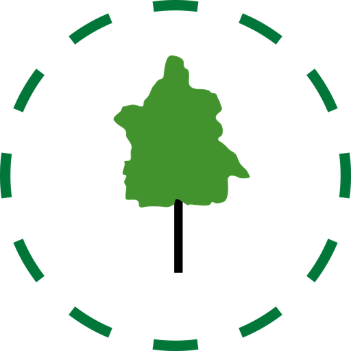

colive.fun · proposalThe current 12 questions are charming and made up. This is the plan to replace them with an instrument grounded in roommate-conflict research, personality science, commune-longevity data — and the five-lens framework from your own course.
Research swarm: 5 parallel literature reviews · sources on the last slide · ←/→ to move
"A commune matchmaking app is not a joke — it is the New Harmony problem, productized." Owen's colony collapsed in two years because it took anyone who showed up. Commons is that homework, shipped.
Property · Governance · Labor · Membership · Outside. Every classical tradition scored on the same axes — "the quiz scores you on them too." The new instrument adopts these as its structural layer.
Twin Oaks (59 yrs), Bruderhof (105), Hutterites (498, split-at-~120 protocol). The autopsy of the 60s: income-sharing, member selection, real governance, binding culture.
"The single most robust pattern in the whole historical record: membership-filter strength predicts longevity."
— Session 3, on why the matchmaking layer matters at all
Hearth/Order/Voice/Mission/Porch/Pool are plausible, but nobody has ever validated them. They blur personality (stable traits), lifestyle (behaviors), and structural preference (how a house should run) into one soup — three things the literature says behave very differently.
Single-item measurement of a latent trait is mostly noise; forced-choice options additionally entangle dimensions (one answer moves two dials). Ultra-short scales are defensible — only when they're validated short forms (TIPI, BFI-10), which these aren't.
"93% match" implies a prediction we cannot make. Similarity on self-reported attitudes predicts far less about how two people actually get along than the UI implies — the strongest finding in the matching literature is a ceiling, not a formula.
① Dealbreakers shown as a count, never which — negative screening is the most defensible thing a matcher can do. ② It's fun — completion matters more than psychometric purity if nobody finishes. ③ Archetypes as a shareable payoff (kept — relabeled as flavor, not science).
The college-roommate literature (the only large natural experiment in stranger co-living) is blunt: conflict comes from behaviors, not worldviews.
~50% of college women and 44% of men report roommate conflict; the domains are the same in every study. Roommate difficulties hurt academics more than alcohol does (5.6% vs 4.0%).
Erb, Renshaw, Short & Pollard 2014 · Dusselier et al. 2005 · ACHA-NCHA 2012Self-labels don't calibrate: two people can both claim "clean" and hold wildly different standards — itself a documented conflict source. Frequency-anchored items ("dishes within 24h") do calibrate.
Niu & Brown 2023, Int. J. Intercultural Relations · Erb et al. 2014Morning-person/night-person pairs show worse adjustment, more conflict, and less shared time. Chronotype has a validated 5-item short form (rMEQ) we can adapt.
Larson, Crane & Smith 1991, JMFT · Adan & Almirall 1991 (rMEQ)Design implication: the lifestyle section must be behavioral and specific — and it's where similarity genuinely matters.
The Big Five/HEXACO literature's core insight for us: some traits make someone a good housemate for anyone. You don't match on them — you measure them.
In ~23,000 couples across three national samples, a partner's agreeableness, conscientiousness and emotional stability predicted satisfaction — while trait similarity added almost nothing beyond those main effects. HEXACO honesty-humility uniquely predicts non-exploitation — the common-purse trait.
Dyrenforth et al. 2010, JPSP · Kurtz & Sherker 2003 (roommates) · Zettler et al. 2020, PoPSThe defensible similarity dimensions are concrete: cleanliness standards, sleep schedule, and (per a couples study that surprised us) values — Schwartz-value similarity predicted satisfaction where Big Five similarity did not.
Erb et al. 2014 · Larson et al. 1991 · Leikas et al. 2018, J. Research in PersonalityTIPI (10 items), BFI-10, BFI-2-XS (15) are published, validated ultra-short Big Five forms with known reliability trade-offs. We borrow their item format without pretending to run a lab.
Gosling et al. 2003 (TIPI) · Rammstedt & John 2007 (BFI-10) · Soto & John 2017 (BFI-2-XS)Design implication: a small "housemate index" measured absolutely — reported as self-insight, never as a public score.
The definitive review found no evidence any questionnaire-matching algorithm beats chance — and OkCupid's own experiment showed the displayed % is self-fulfilling: telling 30%-match pairs they were 90% made them act like it.
Finkel et al. 2012, PSPI · Rudder 2014 (OkCupid experiment)ML on 100+ self-report measures predicted ~0% of which two specific people click. And across 43 longitudinal datasets (11,196 couples), partner traits explain ~5% of relationship quality; in-relationship perceptions explain up to 45%. Compatibility is built, mostly after move-in.
Joel, Eastwick & Finkel 2017, Psych Science · Joel et al. 2020, PNASAcross 313 studies: actual similarity predicts attraction strongly in no-interaction lab paradigms (r=.47) and barely at all in existing relationships — perceived similarity is what matters, and it's built in person. Institutional data even suggests matched roommates do no better than random ones.
Montoya, Horton & Kirchner 2008, JSPR · Eastwick et al. 2014Design implication: the quiz's job is to filter out the impossible and surface the discussable — then push people to a dinner, a mixer, a catalyst weekend. Which is… exactly the product's funnel. The science validates Commons' gatherings pipeline more than it validates any match number.
In 83 nineteenth-century communes, secular ones dissolved ~3× faster, and the number of costly requirements predicted longevity (for ideologically unified groups). Kanter's classic found the same: long-lived utopias used more commitment mechanisms. Practitioner lore says ~90% of forming communities fail.
Sosis & Bressler 2003 · Kanter 1972 · Iannaccone 1994 · Christian 2003A review of 91 commons-governance cases supports Ostrom's principles: clear membership boundaries, participatory rule-making, monitoring, graduated sanctions, cheap conflict resolution — which map one-to-one onto house funds, ledgers, and 2/3 votes.
Cox, Arnold & Villamayor-Tomás 2010, Ecology & Society · Ostrom 1990Long-lived communities screen behaviorally, not psychometrically: Twin Oaks runs a three-week visitor period; FIC communities near-universally use visits and provisional membership. The quiz starts the funnel; the weekend finishes it.
Twin Oaks membership process · ic.org practice · Zablocki 1980Design implication: measure appetite for commitment & structure honestly (the Membership lens) — and treat the retreat, not the quiz, as the real matching event.
In 4,574 couples, financial disagreements out-predicted every other conflict topic for dissolution; diary studies show money fights are the most pervasive and least resolvable. The ledger isn't a feature — it's prophylaxis.
Dew, Britt & Huston 2012, Family Relations · Papp et al. 2009Social Value Orientation — six quick "how do we split this" allocation choices — predicts actual cooperation in public-goods situations (r ≈ .30 across 82 studies). One of the few prospective measures that earns its items.
Balliet, Parks & Joireman 2009, meta-analysis · Murphy et al. 2011 (SVO slider)People carry different default fairness norms — and strict-reciprocity "exchange orientation" predicts worse roommate compatibility. Conveniently, our six money systems are exactly these norms, productized: the quiz should route splitters and poolers to houses that match.
Deutsch 1975 · Murstein & Azar 1986 · Leikas et al. 2018 (values > personality similarity)Design implication: two SVO-style allocation items + the Property lens carry the money layer; the ledger and fit report do the rest.
| Layer | What it measures | Items | How it's used |
|---|---|---|---|
| 0 · Logistics | Budget, area, move-in horizon, room needs | 4 (existing) | hard filter binary compatibility, shown plainly |
| 1 · Hard lines | Dealbreakers (smoking, pets, guests, 420, kids…) | pick-list (existing) | hard filter count shown, never which — unchanged |
| 2 · Rhythms 🕰️ | Chronotype (rMEQ-style ×2), tidiness behavior ×3, noise & guests ×3, kitchen use ×2 | 10 · Likert-5 | similarity weighted distance — the conflict-prediction core |
| 3 · Structure 📐 | The course's five lenses: Property · Governance · Labor · Membership · Outside | 5 · 0–3 scales | similarity structural fit person↔house; replaces Pool/Voice/Porch/Mission |
| 4 · Character 🧭 | Agreeableness ×2, conscientiousness ×2, emotional stability ×2, honesty-humility ×2, SVO allocation ×2, conflict style ×1 | 11 · Likert-5 + sliders | main effect private "housemate index" — self-insight + house-view aggregate only |
≈ 30 scored items · ~6 minutes · archetypes stay, computed from Rhythms+Structure, labeled as flavor.
The course scores every classical tradition on these. The quiz scores you; every house sets its own profile at creation. Structural mismatch is discussable before move-in — this is the theory-grounded replacement for four invented dims.
| Lens | 0 | 3 | Replaces |
|---|---|---|---|
| Property ●●○○ | split every cost, nothing pooled | full common purse | Pool |
| Governance ●●●○ | whoever cares decides | consensus + recallable roles | Voice |
| Labor ●●○○ | everyone specializes | full rotation, all work equal credit | (new — Twin Oaks' labor-credit insight) |
| Membership ●●●○ | open door | trial period + deposit + vote | (new — the longevity lens) |
| Outside ●○○○ | a home, inward-facing | a node — hosting, federating, organizing | Porch + Mission |
Bonus: house profiles on these lenses make the browse gallery legible — "this is a Governance-3, Property-1 house" is a real sentence now.
Three bands with reasons, replacing "93%". Bands are honest about the ceiling; reasons make them useful. (Internally the distance is continuous — we can re-calibrate as outcome data arrives.)
"You're a 10pm house, they're a 1am house — ask about headphones-after-midnight." Every big gap becomes a conversation starter, because perceived similarity is built in person.
Character items never enter the match calc between individuals and are never shown to others. Shown to you as self-insight; aggregated house-side only as "this crew skews structured."
Character items borrow TIPI's format: "I see myself as dependable, self-disciplined." (agree 1–5)
Result screen: five-lens profile + rhythm chart + housemate index (private) + archetype (flavor) + a drafted house agreement ready to edit at the first dinner + "two houses fit strong — here's the next mixer both attend."
Ship with weights from the evidence (rhythms heaviest, lenses second, no character matching). Label fit bands as "early calibration" in the UI — honesty is on-brand.
The check-in system already collects the criterion: conflict frequency, reallocation rate, ledger disputes, member churn at 3/6 months. Correlate intake gaps with outcomes; reweight.
Drop items that don't discriminate, promote the progressive-profiling bank. The FIC directory fields 500k searches a year — the demand for a matching layer that works is not hypothetical.
The pitch in one line: stop predicting chemistry, start preventing New Harmony — screen hard lines, measure what's absolute, match what's behavioral, and get people to a table.
30 items across 5 staged sections (same one-question flow, progress bar, keyboard nav). Lens sliders reuse the 0–3 dot idiom from the course decks. ~1 day of build.
me.dims (six) → me.rhythms (10) + me.lenses (5) + me.index (private). Houses get a lens profile in the create wizard (3 extra sliders). Old profiles map: Pool→Property, Voice→Governance, Porch/Mission→Outside.
Browse cards show fit band + top reason; person pages show lens overlay (the meter UI already exists); dealbreaker counts unchanged; archetypes recomputed, same names.
Fully compatible with the funnel: quiz → browse → mixer → catalyst weekend → join. The science says the weekend was always the real test — the quiz just decides who's at the table.
docs/quiz-research-appendix.mdResearch appendix with all swarm findings: docs/quiz-research-appendix.md
Say the word and v2 ships: 30 items, five lenses, fit bands with reasons, and a quiz that finally knows what it can't know.